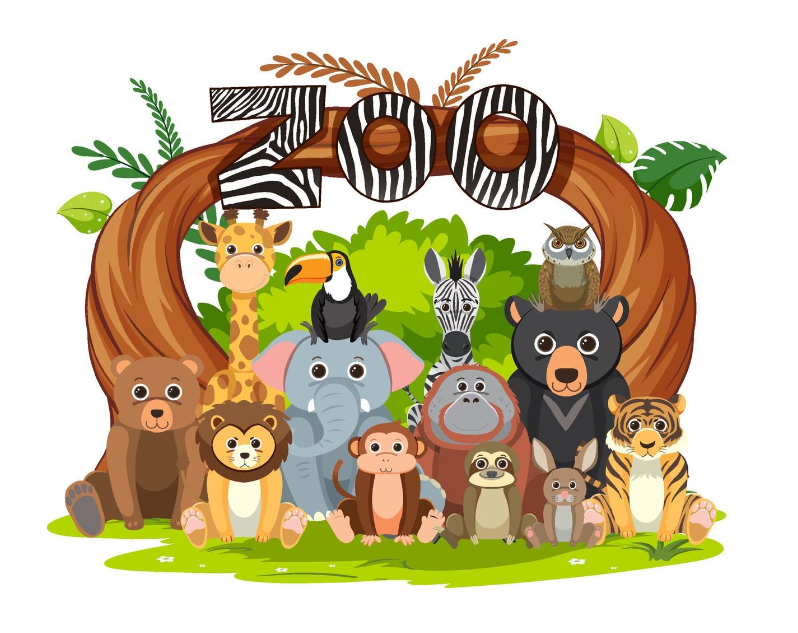
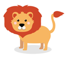
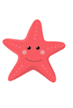

<!DOCTYPE html>
<html>
  <head>
    <title>Zoo experiment</title>
    <script src="https://unpkg.com/jspsych@7.3.1"></script>
    <script src="https://unpkg.com/@jspsych/plugin-html-keyboard-response@1.1.2"></script>
    <script src="https://unpkg.com/@jspsych/plugin-image-keyboard-response@1.1.2"></script>
    <script src="https://unpkg.com/@jspsych/plugin-preload@1.1.2"></script>
    <script src="plugins/jspsych-fullscreen.js"></script>
    <link href="https://unpkg.com/jspsych@7.3.1/css/jspsych.css" rel="stylesheet" type="text/css" />
  </head>
  <body></body>
  <script>

    /*this defines the css properties according to the window_screen_size*/
    var root = document.documentElement;
    var vis_angle_px = 105
        //---------------------------------------------------------------------------------------------

    /* initialize jsPsych */
    var jsPsych = initJsPsych({
      on_finish: function() {
        jsPsych.data.displayData();
      }
    });

    /* create timeline */
    var timeline = [];

    /* preload images */
    var preload = {
      type: jsPsychPreload,
      images: ['images/zoo.png','images/keyboard.png','images/1.png', 'images/2.png', 'images/3.png', 'images/4.png', 'images/5.png', 'images/6.png', 'images/7.png', 'images/8.png', 'images/9.png', 'images/10.png', 'images/11.png', 'images/12.png', 'images/13.png', 'images/14.png', 'images/15.png', 'images/16.png', 'images/17.png', 'images/18.png', 'images/19.png', 'images/20.png']
    };
    timeline.push(preload);

    /* define welcome message trial */

    // var full_screen = {
    //             type: 'fullscreen',
    //             fullscreen_mode: true,
    //             message: '<p style="text-align: center"> After pressing the button you will switch to full screen mode</p>',
    //             button_label: 'Continue to full screen mode'
    //         };
    
    var welcome = {
      type: jsPsychHtmlKeyboardResponse,
      stimulus: `
      <p>Welcome to the Zoo experiment. Press any key to begin.</p> 
      <div style='float: center;'></img>
      `,
    };

    // timeline.push(full_screen, welcome);
     timeline.push(welcome);

    /* define instructions trial */
    var instructions = {
      type: jsPsychHtmlKeyboardResponse,
      stimulus: `
        <p>In this experiment, an animal will appear in the center 
        of the screen.</p><p> As you will see later, each animal belongs to one of two zoos (San Diego and Kansas-City).
        </p><p>Your goal is to remember which animal belongs to each zoo and associate it accordingly.
        </p><p>If the animal is belongs to <strong>San-Diego Zoo</strong>, 
        press the letter  <strong>S </strong>  on the keyboard as fast as you can.</p>
        <p>If the animal is belongs to <strong>Kansas-City Zoo</strong>, press the letter  <strong>K </strong>
        as fast as you can.</p>
        <div style='width: 700px;'>
        </div>
        <div style='float: center;'></img>
        <p>Press any key to begin.</p>
      `,


    //   stimulus: `
    //     <p>In this experiment, an animal will appear in the center 
    //     of the screen.</p><p>If the animal is belongs to <strong>Bronx Zoo</strong>, 
    //     press the letter  <strong>F </strong>  on the keyboard as fast as you can.</p>
    //     <p>If the animal is belongs to <strong>San-Diego Zoo</strong>, press the letter  <strong>J </strong>
    //     as fast as you can.</p>
    //     <div style='width: 700px;'>
    //     // <div style='float: left;'></img>
    //     // <p class='small'><strong>Bronx Zoo</strong></p></div>
    //     // <div style='float: right;'></img>
    //     // <p class='small'><strong>San-Diego Zoo</strong></p></div>
    //     // </div>
    //     <p>Press any key to begin.</p>
    //   `,
      post_trial_gap: 50
    };
    timeline.push(instructions);

    var stimuli = [
      { stimulus: "images/1.png"},
      { stimulus: "images/2.png"},
      { stimulus: "images/3.png"},
      { stimulus: "images/4.png"},
      { stimulus: "images/5.png"},
      { stimulus: "images/6.png"},
      { stimulus: "images/7.png"},
      { stimulus: "images/8.png"},
      { stimulus: "images/9.png"},
      { stimulus: "images/10.png"},
      { stimulus: "images/11.png"},
      { stimulus: "images/12.png"},
      { stimulus: "images/13.png"},
      { stimulus: "images/14.png"},
      { stimulus: "images/15.png"},
      { stimulus: "images/16.png"},
      { stimulus: "images/17.png"},
      { stimulus: "images/18.png"},
      { stimulus: "images/19.png"},
      { stimulus: "images/20.png"}

    
    ];

    var correct_response = [
      {correct_response: 's'},
      {correct_response: 'k'},
      ];

      var shuffled_stimuli = jsPsych.randomization.shuffle(stimuli) 
      var test_stimuli_2 = [{stimulus:shuffled_stimuli[0].stimulus, correct_response:correct_response[0].correct_response}, {stimulus:shuffled_stimuli[1].stimulus, correct_response:correct_response[1].correct_response}]
      var test_stimuli_4 = [{stimulus:shuffled_stimuli[2].stimulus, correct_response:correct_response[0].correct_response}, {stimulus:shuffled_stimuli[3].stimulus, correct_response:correct_response[1].correct_response},{stimulus:shuffled_stimuli[4].stimulus, correct_response:correct_response[0].correct_response},{stimulus:shuffled_stimuli[5].stimulus, correct_response:correct_response[1].correct_response}]
      var test_stimuli_6 = [{stimulus:shuffled_stimuli[6].stimulus, correct_response:correct_response[0].correct_response}, {stimulus:shuffled_stimuli[7].stimulus, correct_response:correct_response[1].correct_response},{stimulus:shuffled_stimuli[8].stimulus, correct_response:correct_response[0].correct_response},{stimulus:shuffled_stimuli[9].stimulus, correct_response:correct_response[1].correct_response},{stimulus:shuffled_stimuli[10].stimulus, correct_response:correct_response[0].correct_response},{stimulus:shuffled_stimuli[11].stimulus, correct_response:correct_response[1].correct_response}]
      var test_stimuli_8 = [{stimulus:shuffled_stimuli[12].stimulus, correct_response:correct_response[0].correct_response}, {stimulus:shuffled_stimuli[13].stimulus, correct_response:correct_response[1].correct_response},{stimulus:shuffled_stimuli[14].stimulus, correct_response:correct_response[0].correct_response},{stimulus:shuffled_stimuli[15].stimulus, correct_response:correct_response[1].correct_response},{stimulus:shuffled_stimuli[16].stimulus, correct_response:correct_response[0].correct_response},{stimulus:shuffled_stimuli[17].stimulus, correct_response:correct_response[1].correct_response},{stimulus:shuffled_stimuli[18].stimulus, correct_response:correct_response[1].correct_response},{stimulus:shuffled_stimuli[19].stimulus, correct_response:correct_response[1].correct_response}]

   
      /* define fixation and test trials */
    
    var block_start_1 = {
      type: jsPsychHtmlKeyboardResponse,
      stimulus:  '<p><b><u>Test block 1 out of 4' + '</u></b></p>' +      
      '<p style="text-align: center">The animals on the left side of the screen belong to San-Diego Zoo.</p>' +
      '<p style="text-align: center">The animals on the Right side of the screen belong to Kansas-City Zoo.</p>' +
      '<p style="text-align: center">Do your best to remember which animal belongs to any zoo.</p>' +
      ' '+
      ' ' +
      '<p style="text-align: center">Press any key to continue.</p>' 
      ,
      post_trial_gap: 50
    };


    var block_start_2 = {
      type: jsPsychHtmlKeyboardResponse,
      stimulus:  '<p><b><u>Test block 2 out of 4' + '</u></b></p>' +      
      '<p style="text-align: center">The animals on the left side of the screen belong to San-Diego Zoo.</p>' +
      '<p style="text-align: center">The animals on the Right side of the screen belong to Kansas-City Zoo.</p>' +
      '<p style="text-align: center">Do your best to remember which animal belongs to any zoo.</p>' +
      ' '+
      ' ' +
      ' ' +
      ' ' +
      '<p style="text-align: center">Press any key to continue.</p>' 
      ,
      post_trial_gap: 50
    };


    var block_start_3 = {
      type: jsPsychHtmlKeyboardResponse,
      stimulus:  '<p><b><u>Test block 3 out of 4' + '</u></b></p>' +      
      '<p style="text-align: center">The animals on the left side of the screen belong to San-Diego Zoo.</p>' +
      '<p style="text-align: center">The animals on the Right side of the screen belong to Kansas-City Zoo.</p>' +
      '<p style="text-align: center">Do your best to remember which animal belongs to any zoo.</p>' +
      ' '+
      ' ' +
      ' ' +
      ' ' +
      ' ' +
      ' ' +
      '<p style="text-align: center">Press any key to continue.</p>' 
      ,
      post_trial_gap: 50
    };


    var block_start_4 = {
      type: jsPsychHtmlKeyboardResponse,
      stimulus:  '<p><b><u>Test block 4 out of 4' + '</u></b></p>' +      
      '<p style="text-align: center">The animals on the left side of the screen belong to San-Diego Zoo.</p>' +
      '<p style="text-align: center">The animals on the Right side of the screen belong to Kansas-City Zoo.</p>' +
      '<p style="text-align: center">Do your best to remember which animal belongs to any zoo.</p>' +
      ' '+
      ' ' +
      ' ' +
      ' ' +
      ' ' +
      ' ' +
      ' ' +
      ' ' +
      '<p style="text-align: center">Press any key to continue.</p>' 
      ,
      post_trial_gap: 50
    };


    var fixation = {
      type: jsPsychHtmlKeyboardResponse,
      stimulus: '<div style="font-size:60px;">+</div>',
      choices: "NO_KEYS",
      trial_duration: 500,
      data: {
        task: 'fixation'
      }
    };

    var test = {
      type: jsPsychImageKeyboardResponse,
      stimulus: jsPsych.timelineVariable('stimulus'),
      choices: ['s', 'k'],
      data: {
        task: 'response',
        correct_response: jsPsych.timelineVariable('correct_response')
      },
      on_finish: function(data){
        data.correct = jsPsych.pluginAPI.compareKeys(data.response, data.correct_response);
      }
    };


    var finish_block = {
      type: jsPsychHtmlKeyboardResponse,
      stimulus: '<p> Good job! The current block is over. </p>' +
      ' You can stretch a little and take a short break while sitting in front of the screen, if needed.</p><p> <br><br><br><b> Press SPACE to continue</b></p>',
      post_trial_gap: 50
    };

    /* define test procedure */
    var block_1 = {
      timeline: [fixation, test],
      timeline_variables: test_stimuli_2,
      sample: {
        type: 'with-replacement',
        size: 1
    },
      repetitions: 2,
      randomize_order: true
    };
    

    var block_2 = {
      timeline: [fixation, test],
      timeline_variables: test_stimuli_4,
      sample: {
        type: 'with-replacement',
        size: 1
    },
      repetitions: 4,
      randomize_order: true
    };

    var block_3 = {
      timeline: [fixation, test],
      timeline_variables: test_stimuli_6,
      sample: {
        type: 'with-replacement',
        size: 1
    },
      repetitions: 6,
      randomize_order: true
    };

    var block_4 = {
      timeline: [fixation, test],
      timeline_variables: test_stimuli_8,
      sample: {
        type: 'with-replacement',
        size: 1
    },
      repetitions: 8,
      randomize_order: true
    };
    
    

    timeline.push(block_start_1, block_1, finish_block, block_start_2, block_2, finish_block, block_start_3, block_3, finish_block, block_start_4, block_4);

    /* define debrief */
    var debrief_block = {
      type: jsPsychHtmlKeyboardResponse,
      stimulus: function() {

        var trials = jsPsych.data.get().filter({task: 'response'});
        var correct_trials = trials.filter({correct: true});
        var accuracy = Math.round(correct_trials.count() / trials.count() * 100);
        var rt = Math.round(correct_trials.select('rt').mean());

        return `<p>You responded correctly on ${accuracy}% of the trials.</p>
          <p>Your average response time was ${rt}ms.</p>
          <p>Press any key to complete the experiment. Thank you!</p>`;

      }
    };

    timeline.push(debrief_block);

    /* start the experiment */
    jsPsych.run(timeline);

  </script>
</html>